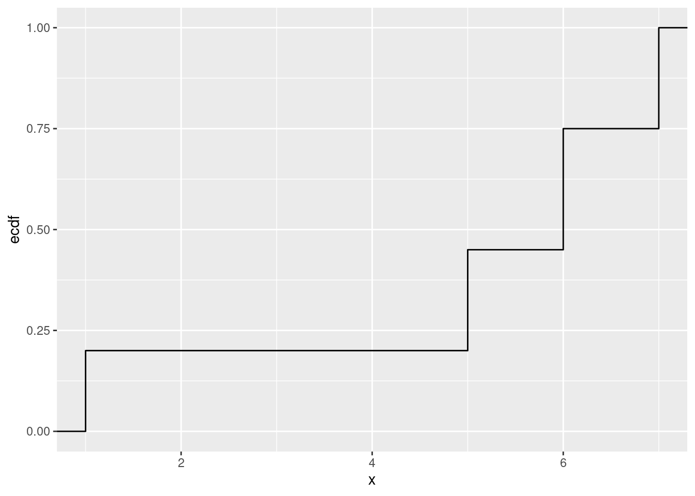

第2章 データの整理と確率変数の基礎
先に出版社サイトよりデータをダウンロードする.
# サポートファイルへのリンク
curl <- "https://www.yuhikaku.co.jp/static_files/05385_support02.zip"
# ダウンロード保存用フォルダが存在しない場合, 作成
if(!dir.exists("downloads")){
dir.create("downloads")
}
cdestfile <- "downloads/support02.zip"
download.file(curl, cdestfile)
# データ保存用フォルダが存在しない場合, 作成
if(!dir.exists("data")){
dir.create("data")
}
# WSL上のRで解凍すると文字化けするので、Linuxのコマンドを外部呼び出し
# Windowsの場合は別途コマンドを用いる.
if(.Platform$OS.type == "unix") {
system(sprintf('unzip -n -Ocp932 %s -d %s', "downloads/support02.zip", "./data"))
} else {
print("Windowsで解凍するコマンドを別途追加せよ.")
}必要なライブラリを読み込む.
library(tidyverse)
## ── Attaching core tidyverse packages ────────────── tidyverse 2.0.0 ──
## ✔ dplyr 1.1.4 ✔ readr 2.1.5
## ✔ forcats 1.0.0 ✔ stringr 1.5.1
## ✔ ggplot2 3.5.1 ✔ tibble 3.2.1
## ✔ lubridate 1.9.3 ✔ tidyr 1.3.1
## ✔ purrr 1.0.2
## ── Conflicts ──────────────────────────────── tidyverse_conflicts() ──
## ✖ dplyr::filter() masks stats::filter()
## ✖ dplyr::lag() masks stats::lag()
## ℹ Use the conflicted package (<http://conflicted.r-lib.org/>) to force all conflicts to become errors練習問題 2-2 [確認]
与式1行目については \[ \begin{aligned} LHS_1 &= \frac{1}{N}\sum_{i=1}^N (x_i-\bar{x})^2 = \frac{1}{N}\sum_{i=1}^N (x_i^2 - 2x_i\bar{x}+\bar{x}^2) \\ &= \frac{1}{N}\left[\sum_{i=1}^N (x_i^2-x_i\bar{x})-\left(\bar{x}\sum_{i=1}^N x_i-N\bar{x}^2\right)\right] \\ &= \frac{1}{N}\left[\sum_{i=1}^N (x_i^2-x_i\bar{x})-\left(\bar{x}\cdot N\bar{x}-N\bar{x}^2\right)\right] \\ &= \frac{1}{N}\sum_{i=1}^N (x_i^2-x_i\bar{x}) = \frac{1}{N}\sum_{i=1}^N (x_i-\bar{x})x_i = MHS \\ &= \frac{1}{N}\sum_{i=1}^N x_i^2 - \frac{1}{N}\bar{x}\sum_{i=1}^N x_i \\ &= \frac{1}{N}\sum_{i=1}^N x_i^2 - \frac{1}{N}\bar{x}\cdot N\bar{x} \\ &= \frac{1}{N}\sum_{i=1}^N x_i^2 - \bar{x}^2 = RHS_1. \end{aligned} \] 与式2, 3行目については \[ \begin{aligned} LHS_2 &= \frac{1}{N}\sum_{i=1}^N (x_i-\bar{x})(y_i - \bar{y}) = \frac{1}{N}\sum_{i=1}^N (x_iy_i - x_i\bar{y} - \bar{x}y_i + \bar{x}\bar{y}) \\ &= \frac{1}{N}\left[\sum_{i=1}^N (x_iy_i - \bar{x}y_i) - \sum_{i=1}^N (x_i\bar{y} - \bar{x}\bar{y})\right] \\ &= \frac{1}{N}\left[\sum_{i=1}^N (x_iy_i - \bar{x}y_i) - (N\bar{x}\bar{y} - N\bar{x}{y})\right] \\ &= \frac{1}{N}\sum_{i=1}^N (x_i-\bar{x})y_i = MHS_2 \\ &= \frac{1}{N}\sum_{i=1}^N (x_iy_i) - \frac{1}{N}\bar{x}\sum_{i=1}^N y_i \\ &= \frac{1}{N}\sum_{i=1}^N x_iy_i - \frac{1}{N}\bar{x}\cdot N\bar{y} \\ &= \frac{1}{N}\sum_{i=1}^N x_iy_i - \bar{x}\bar{y} = RHS_3. \end{aligned} \] \(MHS_2 = RHS_2\)は\(LHS_2 = MHS_2\)と\(x\)と\(y\)との対称性から求められるので, 省略. QED
練習問題 2-3 [確認]
練習問題 2-4 [確認]
任意の\(t\)に対して \[ \begin{aligned} \Var(tX+Y) &= t^2\Var(X) + 2t\Cov(X, Y) + \Var(Y) \\ &= s_x^2t^2 + 2s_{xy}t + s_y^2 \geq 0 \end{aligned} \] だから, これを\(t\)に関する2次関数と見ると, 判別式は \[ D = s_{xy}^2 - s_x^2s_y^2 \leq 0 \] を満たす. これより, \(0 \leq s_{xy}^2 \leq s_x^2s_y^2\)であるから, \[ |s_{xy}| \leq s_xs_y. \] よって, \[ \frac{|s_{xy}|}{s_xs_y} = \left|\frac{s_{xy}}{s_xs_y}\right| = |r_{xy}| \leq 1 \] i.e., \(-1 \leq r_{xy} \leq 1\). QED
別解 2つのベクトル\(\mathbb{x} = (x_1, \cdots, x_n), \mathbb{y} = (y_1, \cdots, y_n)\)を考える. それぞれの値を平均値で引いたものを \(\mathbb{x}_c = (x_1 - \bar{x}, \cdots, x_n - \bar{x}), \mathbb{y}_c = (y_1 - \bar{y}, \cdots, y_n - \bar{y})\)とすると, 相関係数\(r_{xy}\)は \[ \begin{aligned} r_{xy} &= \frac{s_{xy}}{s_xs_y} \\ &= \frac{\sum_{i=1}^n (x_i - \bar{x})(y_i - \bar{y})}{\sqrt{\sum_{i=1}^n (x_i - \bar{x})^2}\sqrt{\sum_{i=1}^n (y_i - \bar{y})^2}} \\ &= \frac{\mathbb{x}_c\cdot\mathbb{y}_c}{|\mathbb{x}_c||\mathbb{y}_c|} \\ &= \cos\theta & \text{ただし, $\theta$は$\mathbb{x}_c$と$\mathbb{y}_c$のなす角} \end{aligned} \] と表せるから, \(-1 \leq \cos\theta = r_{xy} \leq 1\)である. QED
練習問題 2-5 [確認]
それぞれ \[ \begin{aligned} \E(X) &= \sum_x x\P(X=x) = 1\cdot\frac{1}{5} + 5\cdot\frac{1}{4} + 6\cdot\frac{3}{10} + 7\cdot\frac{1}{4} = 5. \\ \E(X^2) &= \sum_x x^2\P(X=x) = 1^2\cdot\frac{1}{5} + 5^2\cdot\frac{1}{4} + 6^2\cdot\frac{3}{10} + 7^2\cdot\frac{1}{4} = 29.5. \\ \Var(X) &= \E(X^2) - [\E(X)]^2 = 4.5. \end{aligned} \]
累積分布関数はggplot2::stat_ecdf()を用いて描画できる.
データは先に指定された確率通りに生成しておく.
data <- tibble(x = c(rep (1, 8), rep(5, 10), rep(6, 12), rep(7, 10)))
data %>%
ggplot(aes(x = x)) +
stat_ecdf()